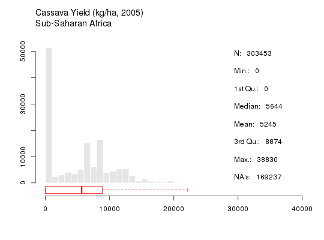

stats(var, iso3 = "SSA", by = NULL)
Display a histogram and univariate statistics for any selected HarvestChoice variable(s).
See examples below. Note that calling stats(...) is equivalent to calling the
convenience method hcapi(..., format="stats").
# API call: generate 2 plots showing farming systems and 2012 population density in Ghana
curl http://hcapi.harvestchoice.org/ocpu/library/hcapi3/R/stats \
-d '{"var":["bmi", "cass_y"]}' \
-X POST -H 'Content-Type:application/json'
/ocpu/tmp/x09db409895/R/.val /ocpu/tmp/x09db409895/graphics/1 /ocpu/tmp/x09db409895/graphics/2 /ocpu/tmp/x09db409895/source /ocpu/tmp/x09db409895/console /ocpu/tmp/x09db409895/info /ocpu/tmp/x09db409895/files/DESCRIPTION
Use wget (at the command line) to download the generated plot(s)
wget http://hcapi.harvestchoice.org/ocpu/tmp/x09db409895/graphics/1/png
wget http://hcapi.harvestchoice.org/ocpu/tmp/x09db409895/graphics/2/png
# Plots of BMI and cassava yield distribution over sub-Saharan Africa stats(c("bmi", "cass_y"))